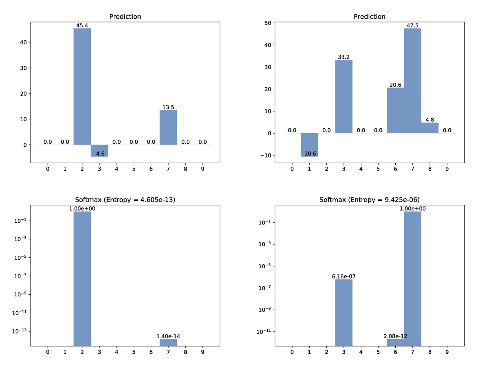
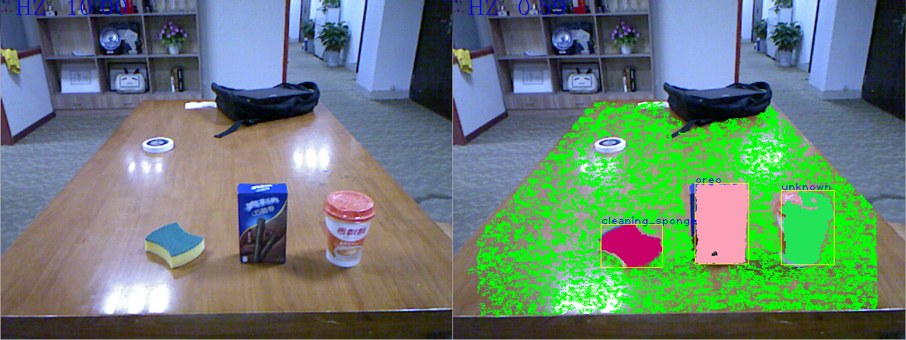

CNN Object Classifier
This is a project I implement on the KeJia Robot to improve its capability of object recognition. This project is a part of my master thesis [PDF(Chinese)]. As a service robot, KeJia needs to be able to recognize specific objects from very limited training data. One of the most efficient way to achieve this is the Convolutional Neural Network (CNN), a deep learning technology that develops rapidly in the past few years. I adapt the famous VGG-16 proposed by Visual Geometry Group in University of Oxford, which won the first place in ImageNet contest 2014. It is a deep network composed of a series of convolutional layers and maxpooling layers, ends with three full-connected layers. In each convolutional layer, the input is convoluted with a 3 x 3 filter, added to a bias, and passes through a rectified linear unit (ReLU) function. Since the robot does not need to recognize as many classes of objects as the ImageNet (which is 1000), the dimensions of the full-connected layers are reduced to save time and memory. I choose TensorFlow as the neural network library.
Network architecture (click for higher resolution)
The training set is composed with images taken by the cameras of the KeJia Robot. The robot has two image sensors, a kinect and a high resolution RGB camera. After being calibrated using a "chessboard", correspondence between the two images could be established. The objects are placed on a table and pictures are taken from numerous aspects. With the convenient functionalities provided by the Point Cloud Library (PCL), the point cloud could be easily segmented into background and objects. Then objects could be cropped from the high resolution images. In practice, the training set contains about 100 images for each object to be trained.
Some images from the training set (click for full resolution)
Before being fed to the network, the input images are distorted randomly to prevent overfitting. Each image is flipped randomly, the brightness and contrast are adjust randomly, and cropped randomly to square before being resized to 224 x 224 pixels. Weights of convolutional layers are loaded from model pretrained on the ILSVRC2012 dataset, which makes the network efficiently extract features from images. The weights of the full-connected layers are trained by the Adam Optimizer to minimize the cross entropy. On NVIDIA GTX 1060 3GB with CUDA 8.0, CUDNN 5.1, and TensorFlow 1.1.0, The training process consumes about 35ms per image in one epoch.
Some of the extracted features by convolutional layers of VGG16 (click for full resolution)
When the robot recognizes objects, images of candidates are cropped in the same method as how the training data is gathered. The robot might encounter objects that do not present in the training set, so the confidence of the recognition results needs to be measured. This is calculated by following the criteria that a confident prediction is such prediction that one score in the output vector is significantly higher than others. The output of the network is normalized to a probability distribution by softmax function, then the Shannon entropy of the distribution is calculated. Only predictions that have entropy lower than an empirical threshold are considered valid.

Examples of confident and unconfident prediction (10 classes)
In practice, if high-end GPU is available, each input image would be recognized multiple times. Valid predictions vote on the final decision. If one of the classes has sufficient votes, it would be the final recognition result, otherwise the input image is labeled as an unknown object.

An example of real-time recognition
{kind=link}
{kind=link}
{kind=link}